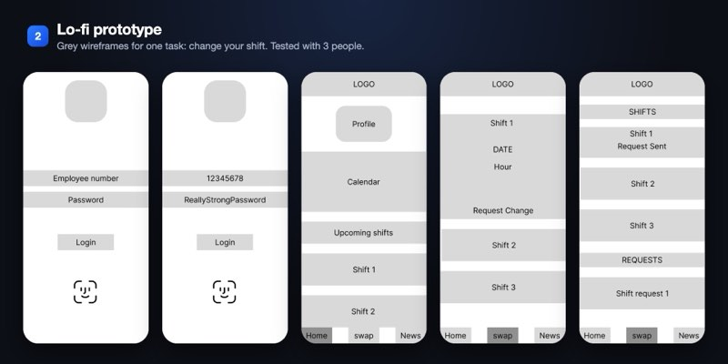
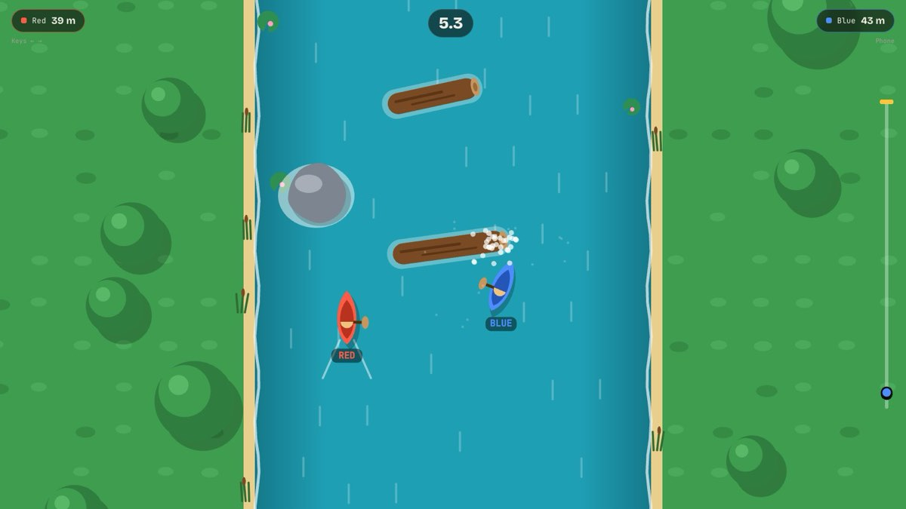
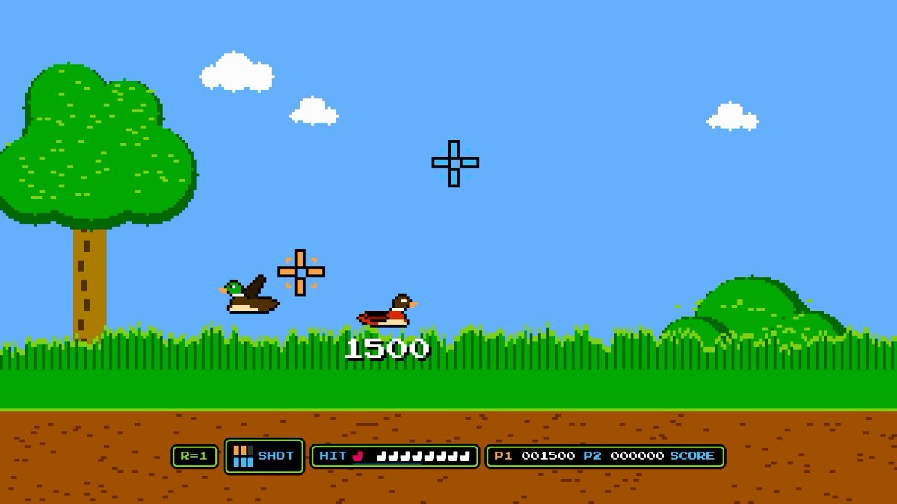

Three more directions, pushed further
Round two, shaped for UI/UX product teams first. Each one is a working sketch you can drag and click. The first three are saved and still at their own link.
First screen. The clock starts when you move. Do the task.
Find a game you can play right now.
No wrong answers. I'm Costin, a game and UI/UX designer, and this page times how fast you find things.
- Waiting for the participant.
End of the session. It fills in with your own times.
Your session
Example times. Do the three tasks above and yours replace them.
 ShiftPro was built the same way.
ShiftPro was built the same way.
12 people, two rounds, and every change traced back to something a tester did.
ShiftPro case studyThe idea
You say you test things on real people, so the site tests itself on the visitor. It sets three small tasks, times them, and shows the result. A design lead gets your method by doing it.
How it moves
Almost nothing moves. A live clock, notes that write themselves as you click, and bars that grow to your real times. The task buttons are the real navigation, so any click still takes you somewhere.
Honest risk
It needs a visitor willing to play for ten seconds. The normal menu stays on top, and if the page turns out slow to use, the clock will say so in public.
First screen. Drag the drawing up and down, click A, B and C.
Understood in seconds.
Costin Sarghiuta, game designer & UI/UX designer. This is ShiftPro pulled apart, one prototype round per layer.


Work section. A parts list where every quantity is a real number.
Parts list
Everything in the box, with the number that matters for each.
- 12×ShiftPropeople tested this shift-swap app over two prototype roundsRead
- 24,000×
 Musterbot matches simulated to balance a 5-minute dice duelPlay
Musterbot matches simulated to balance a 5-minute dice duelPlay - 1×
 Earshotspeaker per app, set from the macOS menu barRead
Earshotspeaker per app, set from the macOS menu barRead - 2×

River Racerphones as paddles, joined with one QR scanPlay - 4×

Duck Shootphones at once, each one a motion-aimed light gunPlay
The idea
Your line is that people should understand your work in seconds. Instruction manuals are the format built for that, so the site becomes one: exploded drawings made from your real prototype rounds, lettered callouts and a parts list.
How it moves
You pull drawings apart by hand and they spring back with the speed you let go at. Callouts you have opened stay ticked. One dashed line runs through every figure on the page.
Honest risk
The format is at its best with line drawings, and yours would have to be drawn. Without them it leans on screenshots, which is less charming than a real manual.
First screen. Drag or flick the orange rail. It settles on a frame.
Costin Sarghiutacuts what tests badly.
Game designer & UI/UX designer
ShiftPro
Shifts, swaps and company news in one app. Three prototype rounds, twelve testers.
Read the case studyOn the pins: five things testing cut
A case study. Each round is a frame, and what it cut hangs underneath.
ShiftPro: three rounds, twelve testers
Lo-fi3 testers
Kept: the clear screensHi-fi9 testers
Kept: the simple, familiar layoutFinalclickable prototype
Shipped as a clickable prototypeThe idea
A film editor's bench. Your projects are frames on an orange strip, and everything testing made you cut still hangs on pins below it. Most portfolios only show what shipped. This one shows the cuts.
How it moves
The rail scrubs under your hand, carries on when you flick it and settles on a frame, never between two. Trims swing when you touch them. One typeface, two colours, nothing else.
Honest risk
Black and orange with all-caps type is loud, and the film idea comes from outside your own work. It needs a real list of cuts for every project, and three of them do not have one yet.
Also on the table
One more idea held its ground but is not sketched here: the whole site as a four-shade handheld game screen, four greens on an 8 by 8 pixel grid with a d-pad to move around. I held it back because your screenshots lose their colour in it. Say the word and I will sketch it.